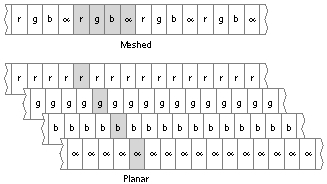
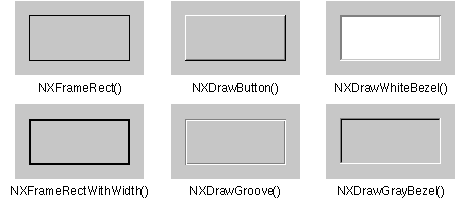
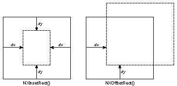

Copyright ©1995 by NeXT Computer, Inc. All Rights Reserved.
| NXAlphaComponent() |
| NXAttachPopUpList(), NXCreatePopUpListButton() |
| SUMMARY Set up a pop-up list
DECLARED IN appkit/PopUpList.h SYNOPSIS void NXAttachPopUpList(id button, PopUpList *popUpList) |
| id NXCreatePopUpListButton(PopUpList *popUpList) |
| DESCRIPTION These functions make it easy to use the PopUpList class. NXCreatePopUpListButton() returns a new Button object that will activate the pop-up list specified by popUpList. The new Button must then be added to the View hierarchy with View's addSubview: method. |
| NXAttachPopUpList() modifies button so that it activates popUpList. In addition, if button already has a target and an action, then they are used whenever a selection is made from the pop-up list. button must be either a Control that uses ButtonCell (or a subclass) as its Cell class, or an actual ButtonCell. |
| RETURN NXCreatePopUpListButton() returns a new Button object. |
| NXBeep() |
| SUMMARY Play the system beep
DECLARED IN appkit/publicWraps.h SYNOPSIS void NXBeep(void) DESCRIPTION This function plays the system beep. Users can select a sound to be played as the system beep through the Preferences application. |
| NXBeginTimer(), NXEndTimer() |
| SUMMARY Set up timer events
DECLARED IN appkit/timer.h SYNOPSIS NXTrackingTimer *NXBeginTimer(NXTrackingTimer *timer, double delay, double period) |
| void NXEndTimer(NXTrackingTimer *timer) |
| DESCRIPTION These functions start up and end a timed entry that puts timer events in the event queue at specified intervals. They ensure that the modal event loop will get a stream of events even if none are being generated by the Window Server. |
| NXBeginTimer()'s delay argument specifies the number of seconds after which timer events will begin to be added to the event queue; an event will then be added every period seconds. The first argument, timer, is a pointer to an NXTrackingTimer structure, which is defined in the header file appkit/timer.h. You don't have to initialize this argument. If you pass a NULL pointer, memory will be allocated for the structure. Since timer events are usually needed only within a modal event loop, it's generally better to declare the structure as a local variable on the stack.
NXEndTimer() stops the flow of timer events. Its argument should be a pointer to the NXTrackingTimer structure used by NXBeginTimer(). If memory had been allocated for the structure, NXEndTimer() frees it. |
| RETURN NXBeginTimer() returns a pointer to the NXTrackingTimer structure it uses. |
| NXBlackComponent() NXBlueComponent() NXBPSFromDepth() NXBrightnessComponent() NXChangeAlphaComponent() NXChangeBlackComponent() NXChangeBlueComponent() NXChangeBrightnessComponent() NXChangeCyanComponent() NXChangeGrayComponent() NXChangeGreenComponent() NXChangeHueComponent() NXChangeMagentaComponent() |
| NXChangeRedComponent(), NXChangeGreenComponent(), NXChangeBlueComponent(), NXChangeCyanComponent(), NXChangeMagentaComponent(), NXChangeYellowComponent(), NXChangeBlackComponent(), NXChangeHueComponent(), NXChangeSaturationComponent(), NXChangeBrightnessComponent(), NXChangeGrayComponent(), NXChangeAlphaComponent() |
| SUMMARY Modify a color by changing one of its components
DECLARED IN appkit/color.h SYNOPSIS NXColor NXChangeRedComponent(NXColor color, float red) |
| NXColor NXChangeGreenComponent(NXColor color, float green) NXColor NXChangeBlueComponent(NXColor color, float blue) NXColor NXChangeCyanComponent(NXColor color, float cyan) NXColor NXChangeMagentaComponent(NXColor color, float magenta) NXColor NXChangeYellowComponent(NXColor color, float yellow) NXColor NXChangeBlackComponent(NXColor color, float black) NXColor NXChangeHueComponent(NXColor color, float hue) NXColor NXChangeSaturationComponent(NXColor color, float saturation) NXColor NXChangeBrightnessComponent(NXColor color, float brightness) NXColor NXChangeGrayComponent(NXColor color, float gray) NXColor NXChangeAlphaComponent(NXColor color, float alpha) |
| DESCRIPTION These functions alter one component of a color value and return the new color. The first argument, color, is the color to be altered and the second argument is the new value for the altered component. For example, the code below specifies a color with a greater red content than the standard brown: |
 NXColor redBrown = NXChangeRedComponent(NX_COLORBROWN, 0.9);
NXColor redBrown = NXChangeRedComponent(NX_COLORBROWN, 0.9);
| Note that the color argument is used as a reference for creating a new color value; it is not itself changed.
Values passed for the altered component should lie between 0.0 and 1.0; out-of-range values will be lowered to 1.0 or raised to 0.0. NX_NOALPHA can be passed to NXChangeAlphaComponent() to remove any specification of coverage from the color. |
| RETURN These functions return an NXColor structure that, except for the altered component, represents a color identical to the one passed as an argument.
SEE ALSO NXRedComponent(), NXSetColor(), NXConvertRGBAToColor(), NXConvertColorToRGBA(), NXEqualColor(), NXReadColor() |
| NXChangeSaturationComponent() NXChangeYellowComponent() NXChunkCopy() NXChunkGrow() |
| NXChunkMalloc(), NXChunkRealloc(), NXChunkGrow(), NXChunkCopy(), NXChunkZoneMalloc(), NXChunkZoneRealloc(), NXChunkZoneGrow(), NXChunkZoneCopy() |
| SUMMARY Manage variable-sized arrays of records
DECLARED IN appkit/chunk.h SYNOPSIS NXChunk *NXChunkMalloc(int growBy, int initUsed) |
| NXChunk *NXChunkRealloc(NXChunk *pc) NXChunk *NXChunkGrow(NXChunk *pc, int newUsed) NXChunk *NXChunkCopy(NXChunk *pc, NXChunk *dpc) NXChunk *NXChunkZoneMalloc(int growBy, int initUsed, NXZone *zone) NXChunk *NXChunkZoneRealloc(NXChunk *pc, NXZone *zone) NXChunk *NXChunkZoneGrow(NXChunk *pc, int newUsed, NXZone *zone) NXChunk *NXChunkZoneCopy(NXChunk *pc, NXChunk *dpc, NXZone *zone) |
| DESCRIPTION A Text object uses these functions to manage variable-sized arrays of records. For general storage management, use objects of the Storage or List class. |
| These functions are paired (for example, NXChunkZoneMalloc() and NXChunkMalloc()): One function lets you specify a zone and one doesn't. Those functions that don't take a zone argument operate within the default zone, as returned by NXDefaultMallocZone(). In all other respects, the two types of functions are identical. In the following discussion, statements concerning one member of a function pair apply equally well to the other member.
Arrays that are managed by these functions must have as their first element an NXChunk structure, as defined in appkit/chunk.h: |
 typedef struct _NXChunk {
typedef struct _NXChunk {
 short growby; /* Increment to grow by */
short growby; /* Increment to grow by */
 int allocated; /* Number of bytes allocated */
int allocated; /* Number of bytes allocated */
 int used; /* Number of bytes used */
int used; /* Number of bytes used */
 } NXChunk;
} NXChunk;
| For example, assuming an account structure has been declared, an accountArray structure is declared as: |
 typedef struct _accountArray {
typedef struct _accountArray {
 NXChunk chunk;
NXChunk chunk;
 account record[1];
account record[1];
 } accountArray;
} accountArray;
| The NXChunk structure stores three values: growby specifies how many additional bytes of storage will be allocated when NXChunkRealloc() is called; allocated stores the number of bytes currently allocated for the array; and used stores the number of bytes currently used by the array's elements.
Note: The values recorded in the NXChunk element don't take into account the size of the NXChunk element itself. However, the functions described here preserve space for this element. You don't need to take into account the size of the array's NXChunk when using these functions. Use NXChunkMalloc() to initially allocate memory for the array. The amount of memory allocated is equal to initUsed. If initUsed is 0, growby bytes are allocated. The array's NXChunk element records the value of growby and the amount of memory allocated for the array. NXChunkRealloc() increases the amount of memory available for the array identified by the pointer pc. The amount of memory allocated depends on the value of the growby member of the array's NXChunk element. If the value is 0, the space for elements is doubled; otherwise the array's size increases by growby bytes. The allocated member of the array's NXChunk element stores the new size of the array. NXChunkGrow() increases the size of the array identified by the pointer pc by a specific amount. The newUsed argument specifies the array's new size in bytes. If the growby member of the array's NXChunk element is 0, the array grows to the size specified by newUsed. Otherwise, the array grows to the larger of growby and newUsed. In either case, the size of the array changes only if the new size is larger than the old one. NXChunkCopy() copies the array identified by the pointer pc to the array identified by the pointer dpc and returns a pointer to the copy. Since the new array may be relocated in memory, the returned pointer may be different than dpc. |
| RETURN Each function returns a pointer to an array's NXChunk element. NXChunkMalloc() returns a pointer to the newly allocated array, NXChunkRealloc() and NXChunkGrow() return pointers to the resized arrays, and NXChunkCopy() returns a pointer to the copy of the array. |
| NXChunkRealloc() NXChunkZoneCopy() NXChunkZoneGrow() NXChunkZoneMalloc() NXChunkZoneRealloc() |
| NXColorListName(), NXColorName(), NXFindColorNamed() |
| SUMMARY Associate colors with their names and their color lists
DECLARED IN appkit/color.h SYNOPSIS const char *NXColorListName (NXColor color) |
| const char *NXColorName (NXColor color) BOOL NXFindColorNamed (const char *colorList, const char *colorName, NXColor *color) |
| DESCRIPTION Use these functions to access named colors and named color lists. They're used in conjunction with objects of the NXColorList class that generate colors with persistent names. The documentation for NXColorList includes a complete description of persistent color names and named NXColorLists. |
| NXColorListName() looks for and returns the name of a color list from which a particular color was taken. color represents the NXColor whose source list name you're seeking. The return value is a character string representing the name of the list from which the color was taken; an empty string is returned if color isn't taken from a named list. This function can be used to get the argument for NXColorList's findColorListNamed: method.
NXColorName() returns the persistent name of a color. color is the NXColor whose persistent name you wish to find. NXFindColorNamed() returns by reference the NXColor associated with a particular name in a particular list. colorList represents the name of the list in which you wish to search; if colorList doesn't represent a NXColorList that generates colors with persistent names, this method returns NO. colorName represents the name of the color you wish to find. color returns the actual NXColor associated with colorName in colorList. |
| RETURN NXColorListName() returns a character string representing the name of the list from which the color was taken; an empty string is returned if the color isn't taken from a named list. |
| NXColorName() returns a character string representing the name of color: an empty string is returned if color wasn't taken from a list that generates colors with persistent names.
NXFindColorNamed() returns YES if it finds colorName in colorList, NO if not. |
| SEE ALSO NXColorList class |
| NXColorName() |
| NXColorSpaceFromDepth(), NXBPSFromDepth(), NXNumberOfColorComponents(), NXGetBestDepth() |
| SUMMARY Get information about color space and window depth
DECLARED IN appkit/graphics.h SYNOPSIS NXColorSpace NXColorSpaceFromDepth(NXWindowDepth depth) |
| int NXBPSFromDepth(NXWindowDepth depth) int NXNumberOfColorComponents(NXColorSpace space) BOOL NXGetBestDepth(NXWindowDepth *depth, int numColors, int bps) |
| DESCRIPTION The first of these functions, NXColorSpaceFromDepth(), maps an enumerated value for window depth into the corresponding enumerated value for color space. The depth argument can be any of the following: |
| NX_TwoBitGrayDepth NX_EightBitGrayDepth NX_TwelveBitRGBDepth NX_TwentyFourBitRGBDepth |
| The value returned will be one of the NXColorSpace values in this list: |
| NX_OneIsBlackColorSpace NX_OneIsWhiteColorSpace NX_RGBColorSpace NX_CMYKColorSpace |
| NX_TwoBitGrayDepth and NX_EightBitGrayDepth map to NX_OneIsWhiteColorSpace.
The second function, NXBPSFromDepth(), extracts the number of bits per sample (bits per pixel in each color component) from a window depth. The third function, NXNumberOfColorComponents(), similarly extracts the number of color components from a color space. The value returned will be 1, 3, or 4. The fourth function, NXGetBestDepth(), finds the best window depth for an image with a given number of color components, numColors, and a given bits per sample, bps. The depth is returned by reference in the variable specified by depth. It will be one of the enumerated values listed above. If the depth provided exactly matches the requirements of numColors and bps, or is deeper than required, this function returns YES. If the depth isn't deep enough for numColors and bps, but is the best available, it returns NO. |
| RETURN NXColorSpaceFromDepth() returns the color space that matches a given window depth. NXBPSFromDepth() returns the number of bits per sample for a given window depth. NXNumberOfColorComponents() returns the number of color components in a given color space. NXGetBestDepth() returns YES if it can provide a window depth deep enough for numColors and bps, and NO if it can't. |
| NXCompleteFilename() |
| SUMMARY Match an incomplete file name
DECLARED IN appkit/SavePanel.h SYNOPSIS int NXCompleteFilename(char *path, int maxPathSize) DESCRIPTION NXCompleteFilename is used by the SavePanel class to determine the number of files matching an incomplete pathname. path is a pointer to a buffer containing an incomplete pathname. maxPathSize is the size of the buffer (not the length of path). RETURN This function returns the number of files that match the incomplete name. By reference, path returns up to maxPathSize characters of the path to the first file matching the incomplete name. |
| NXContainsRect() NXConvertCMYKAToColor() NXConvertCMYKToColor() NXConvertColorToCMYK() NXConvertColorToCMYKA() NXConvertColorToGray() NXConvertColorToGrayAlpha() NXConvertColorToHSB() NXConvertColorToHSBA() NXConvertColorToRGB() |
| NXConvertColorToRGBA(), NXConvertColorToCMYKA(), NXConvertColorToHSBA(), NXConvertColorToGrayAlpha(), NXConvertColorToRGB(), NXConvertColorToCMYK(), NXConvertColorToHSB(), NXConvertColorToGray() |
| SUMMARY Convert a color value to its standard components
DECLARED IN appkit/color.h SYNOPSIS void NXConvertColorToRGBA(NXColor color, float *red, float *green, float *blue, float *alpha) |
| void NXConvertColorToCMYKA(NXColor color, float *cyan, float *magenta, float *yellow, float *black, float *alpha) void NXConvertColorToHSBA(NXColor color, float *hue, float *saturation, float *brightness, float *alpha) void NXConvertColorToGrayAlpha(NXColor color, float *gray, float *alpha) void NXConvertColorToRGB(NXColor color, float *red, float *green, float *blue) void NXConvertColorToCMYK(NXColor color, float *cyan, float *magenta, float *yellow, float *black) void NXConvertColorToHSB(NXColor color, float *hue, float *saturation, float *brightness) void NXConvertColorToGray(NXColor color, float *gray) |
| DESCRIPTION These functions convert a color value, color, to its standard components. The first argument to each function is the NXColor data structure to be converted. Subsequent arguments point to float variables where the component values can be returned by reference. |
| The conversion can be to any set of components that might be used to specify a color value: |
| Red, green, and blue (RGB) components | ||
| Cyan, magenta, yellow, and black (CMYK) components | ||
| Hue, saturation, and brightness (HSB) components | ||
| A single component for gray scale images |
| A color initially specified by one set of components can be converted to another set. For example: |
 NXColor color;
NXColor color;
 float hue, saturation, brightness;
float hue, saturation, brightness;
 color = NXConvertRGBToColor(0.8, 0.3, 0.15);
color = NXConvertRGBToColor(0.8, 0.3, 0.15);
 NXConvertColorToHSB(color, &hue, &saturation, &brightness);
NXConvertColorToHSB(color, &hue, &saturation, &brightness);
| The first four functions in the list above report the coverage component, alpha, included in the color value, as well as the color components. The second four report only the color components; they're macros and are defined on the corresponding functions, but ignore the alpha argument.
The float values returned by reference will lie in the range 0.0 through 1.0. The value returned for the coverage component will be NX_NOALPHA if color doesn't include a coverage specification. |
| SEE ALSO NXConvertRGBAToColor(), NXSetColor(), NXEqualColor(), NXRedComponent(), NXChangeRedComponent(), NXReadColor() |
| NXConvertGlobalToWinNum() NXConvertGrayAlphaToColor() NXConvertGrayToColor() NXConvertHSBAToColor() NXConvertHSBToColor() |
| NXConvertRGBAToColor(), NXConvertCMYKAToColor(), NXConvertHSBAToColor(), NXConvertGrayAlphaToColor(), NXConvertRGBToColor(), NXConvertCMYKToColor(), NXConvertHSBToColor(), NXConvertGrayToColor() |
| SUMMARY Specify a color value
DECLARED IN appkit/color.h SYNOPSIS NXColor NXConvertRGBAToColor(float red, float green, float blue, float alpha) |
| NXColor NXConvertCMYKAToColor(float cyan, float magenta, float yellow, float black, float alpha) NXColor NXConvertHSBAToColor(float hue, float saturation, float brightness, float alpha) NXColor NXConvertGrayAlphaToColor(float gray, float alpha) NXColor NXConvertRGBToColor(float red, float green, float blue) NXColor NXConvertCMYKToColor(float cyan, float magenta, float yellow, float black) NXColor NXConvertHSBToColor(float hue, float saturation, float brightness) NXColor NXConvertGrayToColor(float gray) |
| DESCRIPTION These functions specify a color by its standard components and return an NXColor structure for the color. In the Application Kit, a color can be specified in any of four ways: |
| By its red, green, and blue components (RGB) | ||
| By its cyan, magenta, yellow, and black components (CMYK) | ||
| By its hue, saturation, and brightness components (HSB) | ||
| On a gray scale |
| No matter how they're specified, all color values are stored as the NXColor data type. The internal format of this type is unspecified; it should be set only through these functions or as one of the constants defined for pure colors, such as NX_COLORORANGE or NX_COLORWHITE.
The NXColor structure includes provision for a coverage component, alpha, which can be specified at the same time as the color. The first four functions listed above specify both color and coverage. The last four specify only color; they're defined as macros that work through the corresponding functions by passing NX_NOALPHA for the alpha argument. Except for NX_NOALPHA, all values passed for color and coverage components should lie in the range 0.0 through 1.0; higher values will be reduced to 1.0 and lower ones raised to 0.0. |
| RETURN Each of these functions and macros returns an NXColor structure for the color specified.
SEE ALSO NXConvertColorToRGBA(), NXSetColor(), NXEqualColor(), NXRedComponent(), NXChangeRedComponent(), NXReadColor() |
| NXConvertRGBToColor() |
| NXConvertWinNumToGlobal(), NXConvertGlobalToWinNum() |
| SUMMARY Convert local and global window numbers
DECLARED IN appkit/publicWraps.h SYNOPSIS void NXConvertWinNumToGlobal(int winNum, unsigned int *globalNum) |
| void NXConvertGlobalToWinNum(int globalNum, unsigned int *winNum) |
| DESCRIPTION These functions allow two or more applications to refer to the same window. In the rare cases where this is necessary, the global window number, which has been automatically assigned by the Window Server, is used rather than the local window number, which is assigned by the application. |
| NXConvertWinNumToGlobal() takes the local window number and places the corresponding global window number in the variable specified by globalNum. This global number can then be passed to other applications that need access to the window.
To convert window numbers in the opposite direction, give the global number as an argument for NXConvertGlobalToWinNum(). This function places the appropriate local number in the variable specified by winNum.
NXCopyBits(), NXCopyBitmapFromGState() |
| SUMMARY Copy an image
DECLARED IN appkit/graphics.h SYNOPSIS void NXCopyBits(int gstate, const NXRect *aRect, const NXPoint *aPoint) |
| void NXCopyBitmapFromGState(int gstate, const NXRect *srcRect, const NXRect *destRect) |
| DESCRIPTION NXCopyBits() copies the pixels in the rectangle specified by aRect to the location specified by aPoint. The source rectangle is defined in the graphics state designated by gstate. If gstate is NXNullObject, the current graphics state is assumed. The aPoint destination is defined in the current graphics state. |
| NXCopyBitmapFromGState() copies the pixels in the rectangle srcRect to the rectangle destRect. The source rectangle is defined in the graphics state designated by gstate. The destination is defined in the current graphics state. |
| NXCopyCurrentGState() |
| NXCopyInputData(), NXCopyOutputData() |
| SUMMARY Save data received in a remote message
DECLARED IN appkit/Listener.h SYNOPSIS char *NXCopyInputData(int parameter) |
| char *NXCopyOutputData(int parameter) |
| DESCRIPTION These functions each return a pointer to memory containing data passed from one application to another in a remote message. NXCopyInputData() is used for data received by a Listener object, and NXCopyOutputData() is used for return data received back by a Speaker. |
| Data received by a Listener in a remote message is guaranteed only for the duration of the receiving application's response to the message. Return data passed back to a Speaker is guaranteed only until the Speaker receives another return message. Therefore, you must copy any data you wish to keep.
If the data is passed in-line (if it's not too large to fit within the Mach message), these functions allocate memory for the data, copy it, and return a pointer to the copy. However, it's likely that more memory will be allocated than is required for the copy. Both functions use vm_allocate(), which provides memory in multiples of a page. Therefore, for in-line data, it's more efficient for you to allocate the memory yourself, using malloc() or NX_MALLOC(), then copy the data using a standard library function like strcpy(). For out-of-line data (data that's too large to fit within the Mach message itself, so that only a pointer to it is passed), it's generally more efficient to use NXCopyInputData() and NXCopyOutputData() to save a copy. Both functions ensure that the Listener or Speaker won't free the out-of-line data. Both return a pointer to the data without actually copying it. The memory returned by these functions should be freed using vm_deallocate(), rather than free(). The data to be saved is identified by parameter, an index into the list of parameters declared for the Objective C method that sends or receives the remote message. Indices begin at 0, and byte arrays count as a single parameter even though they're declared as a combination of a pointer to the array and an integer that counts the number of bytes in the array. The examples below illustrate how these functions are used. In the first, a Listener receives a translateGaelic::toWelsh::ok: message, a fictitious message which requests the receiving application to exchange Gaelic text for the equivalent Welsh version. If the application needs to save the original text, it would copy it, using NXCopyInputData(), in the method it implements to respond to the message: |
 char *originalText;
char *originalText;
 - (int)translateGaelic:(char *)gaelicText
- (int)translateGaelic:(char *)gaelicText
 :(int)gaelicLength
:(int)gaelicLength
 toWelsh:(char *)welshText
toWelsh:(char *)welshText
 :(int *)welshLength
:(int *)welshLength
 ok:(int *)flag
ok:(int *)flag
 {
{
 if ( gaelicLength >= vm_page_size )
if ( gaelicLength >= vm_page_size )
 originalText = NXCopyInputData(0);
originalText = NXCopyInputData(0);
 . . .
. . .
 }
}
| The application that sends a translateGaelic::toWelsh::ok: message would save the returned text, using NXCopyOutputData(), immediately after sending the remote message: |
 char *newText;
char *newText;
 int newLength;
int newLength;
 int error, success;
int error, success;
 error = [mySpeaker translateGaelic:someText
error = [mySpeaker translateGaelic:someText
 :strlen(someText)
:strlen(someText)
 toWelsh:&newText
toWelsh:&newText
 :&newLength
:&newLength
 ok:&success];
ok:&success];
 if ( !error && success )
if ( !error && success )
 newText = NXCopyOutputData(1);
newText = NXCopyOutputData(1);
| RETURN Both functions return a pointer to memory containing data identified by the parameter index, or a NULL pointer if the data can't be provided. |
| NXCopyOutputData() |
| NXCountWindows(), NXWindowList() |
| SUMMARY Get information about an application's windows
DECLARED IN appkit/publicWraps.h SYNOPSIS void NXCountWindows(int *count) |
| void NXWindowList(int size, int list[]) |
| DESCRIPTION NXCountWindows() counts the number of on-screen windows belonging to the application; it returns the number by reference in the variable specified by count. |
| NXWindowList() provides an ordered list of the application's on-screen windows. It fills the list array with up to size window numbers; the order of windows in the array is the same as their order in the Window Server's screen list (their front-to-back order on the screen). Use the count obtained by NXCountWindows() to specify the size of the array for NXWindowList().
NXCreateFileContentsPboardType(), NXCreateFilenamePboardType(), NXGetFileType(), NXGetFileTypes() |
| SUMMARY Return file-related pasteboard types
DECLARED IN appkit/Pasteboard.h SYNOPSIS NXAtom NXCreateFileContentsPboardType(const char *fileType) |
| NXAtom NXCreateFilenamePboardType(const char *filename) const char *NXGetFileType(const char *pboardType) const char **NXGetFileTypes(const char *const *pboardTypes) |
| DESCRIPTION NXCreateFileContentsPboardType() returns an NXAtom to a pasteboard type representing a file's contents based on the supplied string fileType. fileType should generally be the extension part of a file name. The conversion from a named file type to a pasteboard type is simple; no mapping to standard pasteboard types is attempted. |
| NXCreateFilenamePboardType() returns an NXAtom to a pasteboard type representing a file name based on the supplied string filename.
NXGetFileType() is the inverse of both NXCreateFileContentsPboardType() and NXCreateFilenamePboardType(). When passed a pasteboard type as returned by those functions, it returns the extension or file name from which the type was derived. It returns NULL if pboardType isn't a pasteboard type created by those functions. NXGetFileTypes() accepts a null-terminated array of pointers to pasteboard types and returns a null-terminated array of the unique extensions and file names from the file-content and file-name types found in the input array. It returns NULL if the input array contains no file-content or file-name types. The returned array is allocated and must be freed by the caller. The pointers in the return array point into strings passed in the input array. |
| NXCreatePopUpListButton() NXCyanComponent() NXDefaultStringOrderTable() |
| NXDefaultTopLevelErrorHandler(), NXSetTopLevelErrorHandler(), NXTopLevelErrorHandler() |
| SUMMARY Define an error handler
DECLARED IN appkit/errors.h SYNOPSIS void NXDefaultTopLevelErrorHandler(NXHandler *errorState) |
| NXTopLevelErrorHandler *NXSetTopLevelErrorHandler(NXTopLevelErrorHandler *procedure) NXTopLevelErrorHandler *NXTopLevelErrorHandler(void) |
| DESCRIPTION This group of a function and two macros defines the top-level error handler. The top-level handler is called when an exception is forwarded through the nested lower-level handlers up to the top level. The hierarchy of error handlers is created by using any number of nested NX_DURING...NX_ENDHANDLER constructs. |
| If an application doesn't define its own top-level handler, by default it will use NXDefaultTopLevelErrorHandler(). This function is defined and used by the Application Kit. Its only argument is a pointer to an NXHandler structure (as defined in the header file objc/error.h). The appkit/errors.h header file defines NXDefaultTopLevelErrorHandler() as being a global variable of type NXTopLevelErrorHandler, which is defined as follows: |
 typedef void NXTopLevelErrorHandler(NXHandler *errorState);
typedef void NXTopLevelErrorHandler(NXHandler *errorState);
 extern NXTopLevelErrorHandler NXDefaultTopLevelErrorHandler;
extern NXTopLevelErrorHandler NXDefaultTopLevelErrorHandler;
| NXDefaultTopLevelErrorHandler() calls NXReportError(), which executes the procedure defined to report the error that occurred. (See the description of NXRegisterErrorReporter() in this chapter for details about NXReportError().) If an error occurred when an application's PostScript context was created or if its PostScript connection is broken, NXDefaultTopLevelErrorHandler() exits.
An application can override NXDefaultTopLevelErrorHandler() by defining its own top-level handler. This involves passing a pointer to an error-handling procedure to the macro NXSetTopLevelErrorHandler(). The new error-handling procedure must be of type NXTopLevelErrorHandler, which means it must take a pointer to an NXHandler as its only argument and it must return void. NXTopLevelErrorHandler() returns a pointer to the current top-level handler. After a new one has been set using NXSetTopLevelErrorHandler(), subsequent calls to NXTopLevelErrorHandler() will return a pointer to the new top-level error handler. The two macros, NXSetTopLevelErrorHandler() and NXTopLevelErrorHandler(), are defined in the header file appkit/errors.h. |
| SEE ALSO NX_RAISE() (Common Functions), NXDefaultExceptionRaiser() (Common Functions), NXRegisterErrorReporter() |
| NXDivideRect() NXDrawALine() |
| NXDrawBitmap(), NXReadBitmap(), NXSizeBitmap() |
| SUMMARY Render and read bitmap images
DECLARED IN appkit/graphics.h SYNOPSIS void NXDrawBitmap(const NXRect *rect, int pixelsWide, int pixelsHigh, int bitsPerSample, int samplesPerPixel, int bitsPerPixel, int bytesPerRow, BOOL isPlanar, BOOL hasAlpha, NXColorSpace colorSpace, const unsigned char *const data[5]) |
| void NXReadBitmap(const NXRect *rect, int pixelsWide, int pixelsHigh, int bps, int spp, int config, int mask, void *data1, void *data2, void *data3, void *data4, void *data5) void NXSizeBitmap(const NXRect *rect, int *size, int *pixelsWide, int *pixelsHigh, int *bps, int *spp, int *config, int *mask) |
| Warning: These functions are marginally obsolete. Most applications are better served using the NXBitmapImageRep class to read and display bitmap images. |
| DESCRIPTION The first of these functions, NXDrawBitmap(), renders an image from a bitmap, binary data that describes the pixel values for the image (this function replaces NXImageBitmap()). The second function, NXReadBitmap(), reads the bitmap for a rendered image using information about the image obtained from NXSizeBitmap(). NXReadBitmap() produces data that NXDrawBitmap() can use to recreate the image. The third function, NXSizeBitmap(), supplies the information required by NXReadBitmap(). |
| NXDrawBitmap() renders a bitmap image using an appropriate PostScript operator--image, colorimage, or alphaimage. It puts the image in the rectangular area specified by its first argument, rect; the rectangle is specified in the current coordinate system and is located in the current window. The next two arguments, pixelsWide and pixelsHigh, give the width and height of the image in pixels. If either of these dimensions is larger or smaller than the corresponding dimension of the destination rectangle, the image will be scaled to fit.
The remaining arguments to NXDrawBitmap() describe the bitmap data, as explained in the following paragraphs. bitsPerSample is the number of bits per sample for each pixel and samplesPerPixel is the number of samples per pixel. bitsPerPixel is based on samplesPerPixel and the configuration of the bitmap: if the configuration is planar, then the value of bitsPerPixel should equal the valule of bitsPerSample; if the configuration isn't planar (is meshed instead), bitsPerPixel should equal bitsPerSample * samplesPerPixel. bytesPerRow is calcualted in one of two ways, depending on the configuration of the image data (data configuration is described below). If the data is planer, bytesPerRow is (7 + (pixelsWide * bitsPerSample)) / 8. If the data is meshed , bytesPerRow is (7 + (pixelsWide * bitsPerSample * samplesPerPixel)) / 8. A sample is data that describes one component of a pixel. In an RGB color system, the red, green, and blue components of a color are specified as separate samples, as are the cyan, magenta, yellow, and black components in a CMYK system. Color values in a gray scale are a single sample. Alpha values that determine transparency and opaqueness are specified as a coverage sample separate from color. In bitmap images with alpha, the color (or gray) components have to be premultiplied with the alpha. This is the way images with alpha are displayed, this is the way they are read back, and this is the way they are stored in TIFFs. isPlanar refers to the way data is configured in the bitmap. This flag should be set YES if a separate data channel is used for each sample. The function provides for up to five channels, data1, data2, data3, data4, and data5. It should be set NO if sample values are interwoven in a single channel (meshed); all values for one pixel are specified before values for the next pixel. Figure 0-1 illustrates these two ways of configuring data. |
|  |
| Figure 0-1. Planar and Meshed Configurations
As shown in the illustration, color samples (rgb) precede the coverage sample () in both configurations. In NEXTSTEP, gray-scale windows store pixel data in planar configuration; color windows store it in meshed configuration. NXDrawBitmap() can render meshed data in a planar window, or planar data in a meshed window. However, it's more efficient if the image has a depth (bitsPerSample) and configuration (isPlanar) that matches the window. hasAlpha indicates whether the image contains alpha. If it does, the number of samples should be 1 greater than the number of color components in the model (e.g., 4 for RGB). colorSpace can be NX_CustomColorSpace, indicating that the image data is to be interpreted according to the current color space in the PostScript graphics state. This allows for imaging using custom color spaces. The image parameters supplied as the other arguments should match what the color space is expecting. If the image data is planar, data[0] through data[samplesPerPixel-1] point to the planes; if the data is meshed, only data[0] needs to be set. NXReadBitmap() gets bitmap data for an existing image. It uses the PostScript readimage operator to read pixel values within the rectangle referred to by its first argument, rect. The rectangle is in the current window and is specified in the current coordinate system. If the rectangle is rotated so that its sides are no longer aligned with the screen coordinate system, NXReadBitmap() will read pixel values for the smallest screen-aligned rectangle enclosing the rectangle specified by rect. NXReadBitmap() writes the bitmap data into the buffers specified by the data1, data2, data3, data4, and data5 arguments. The number of actual buffers you must provide depends on whether there's a separate channel for each sample (config) and on the number of samples per pixel (spp). This information, as well as other information about the image, should be obtained directly from the device using the NXSizeBitmap() function. When passed a pointer to a rectangle, NXSizeBitmap() gets values that NXReadBitmap() needs to produce a bitmap for the rectangle. It yields values that can be passed directly to NXReadBitmap() for the following parameters: |
| pixelsWide pixelsHigh bps spp config mask |
| It also provides the size, in bytes, that will be required for each channel of bitmap data. NXSizeBitmap() works through the currentwindowalpha and sizeimage operators. The following paragraphs describe the kinds of information you could obtain from each of these operators if you were to use them directly.
If currentwindowalpha returns 0, the image may include some transparent paint and you'll need to obtain coverage values in addition to color values in the bitmap. Include NX_ALPHAMASK in mask, and make sure the alpha component is counted in spp. The sizeimage operator provides values for the pixelsWide, pixelsHigh, and bps parameters and for these device-dependent values: |
| The number of color samples per pixel--1 (gray scale), 3 (RGB), or 4 (CMYK). If there's also an alpha component, you'll need to add 1 to this number to obtain spp. | ||
| A boolean value that reflects whether samples are meshed within a single data channel. If they're not meshed, the operator returns true in a multiproc parameter, indicating that in the PostScript language multiple procedures would be required to read the various samples. |
| NXDrawButton(), NXDrawGrayBezel(), NXDrawGroove(), NXDrawWhiteBezel(), NXDrawTiledRects(), NXFrameRect(), NXFrameRectWithWidth() |
| SUMMARY Draw a bordered rectangle
DECLARED IN appkit/graphics.h SYNOPSIS void NXDrawButton(const NXRect *aRect, const NXRect *clipRect) |
| void NXDrawGrayBezel(const NXRect *aRect, const NXRect *clipRect) void NXDrawGroove(const NXRect *aRect, const NXRect *clipRect) void NXDrawWhiteBezel(const NXRect *aRect, const NXRect *clipRect) NXRect *NXDrawTiledRects(NXRect *aRect, const NXRect *clipRect, const int *sides, const float *grays, int count) void NXFrameRect(const NXRect *aRect) void NXFrameRectWithWidth(const NXRect *aRect, NXCoord frameWidth) |
| DESCRIPTION These functions draw rectangles with borders. NXDrawButton() draws the rectangle used to signify a button in the NEXTSTEP user interface, NXDrawTiledRects() is a generic function that can be used to draw different types of borders, and the other functions provide ready-made bezeled, grooved, or line borders. These borders can be used to outline an area or to give rectangles the effect of being recessed from or elevated above the surface of the screen, as shown in Figure 0-2. |
|  |
| Figure 0-2. Rectangle Borders
Each function's first argument specifies the rectangle within which the border is to be drawn in the current coordinate system. Since these functions are often used to draw the border of a View, this rectangle will typically be that View's bounds rectangle. Some of the functions also take a clipping rectangle; only those parts of aRect that lie within the clipping rectangle will be drawn. As its name suggests, NXDrawWhiteBezel() fills in its rectangle with white; NXDrawButton(), NXDrawGrayBezel(), and NXDrawGroove() use light gray. These functions are designed for rectangles that are defined in unscaled, unrotated coordinate systems (that is, where the y-axis is vertical, the x-axis is horizontal, and a unit along either axis is equal to one screen pixel). The coordinate system can be either flipped or unflipped. The sides of the rectangle should lie on pixel boundaries. NXFrameRect() and NXFrameRectWithWidth() draw a frame around the inside of a rectangle in the current color. NXFrameRect() draws a frame with a width equal to 1.0 in the current coordinate system; NXFrameRectWithWidth() allows you to set the width of the frame. Since the frame is drawn inside the rectangle, it will be visible even if drawing is clipped to the rectangle (as it would be if the rectangle were a View object). These functions work best if the sides of the rectangle lie on pixel boundaries. In addition to its aRect and clipRect arguments, NXDrawTiledRects() takes three more arguments, which determine how thick the border is and what gray levels are used to form it. NXDrawTiledRects() works through NXDivideRect() to take successive 1.0 In the following example, NXDrawTiledRects() draws a bezeled border consisting of a 1.0 |
 int mySides[] = {NX_YMIN, NX_XMAX, NX_YMAX, NX_XMIN,
int mySides[] = {NX_YMIN, NX_XMAX, NX_YMAX, NX_XMIN,
 NX_YMIN, NX_XMAX};
NX_YMIN, NX_XMAX};
 float myGrays[] = {NX_BLACK, NX_BLACK, NX_WHITE, NX_WHITE,
float myGrays[] = {NX_BLACK, NX_BLACK, NX_WHITE, NX_WHITE,
 NX_DKGRAY, NX_DKGRAY};
NX_DKGRAY, NX_DKGRAY};
 NXRect *aRect;
NXRect *aRect;
 NXDrawTiledRects(aRect, (NXRect *)0, mySides, myGrays, 6);
NXDrawTiledRects(aRect, (NXRect *)0, mySides, myGrays, 6);
 PSsetgray(NX_LTGRAY);
PSsetgray(NX_LTGRAY);
 PSrectfill(aRect->origin.x, aRect->origin.y,
PSrectfill(aRect->origin.x, aRect->origin.y,
 aRect->size.width, aRect->size.height);
aRect->size.width, aRect->size.height);
| As shown, mySides is an array that specifies sides of a rectangle; for example, NX_YMIN selects the side parallel to the x-axis with the smallest y-coordinate value. The constants shown in mySides are described in more detail in the description of NXDivideRect(). myGrays is an array that specifies the successive gray levels to be used in drawing parts of the border. |
| RETURN NXDrawTiledRects() returns a pointer to the rectangle that lies within the border.
SEE ALSO NXDivideRect() |
| NXDrawGrayBezel() NXDrawGroove() NXDrawTiledRects() NXDrawWhiteBezel() NXEditorFilter() NXEmptyRect() NXEndTimer() |
| NXEqualColor() |
| SUMMARY Test whether two colors are the same
DECLARED IN appkit/color.h SYNOPSIS BOOL NXEqualColor(NXColor oneColor, NXColor anotherColor) DESCRIPTION This function compares oneColor to anotherColor and returns YES if they are, in fact, the same color. Two colors can be the same, yet be represented differently within the NXColor structure. Therefore, NXColor structures should be compared only through this function, never directly. |
| The coverage components of the NXColor structures are included in the comparison. |
| RETURN This function returns YES if the two colors are visually identical, and NO if they're not.
SEE ALSO NXSetColor(), NXConvertRGBAToColor(), NXConvertColorToRGBA(), NXRedComponent(), NXChangeRedComponent(), NXReadColor() |
| NXEqualRect() NXEraseRect() |
| NXFieldFilter(), NXEditorFilter() |
| SUMMARY Filter characters entered into Text object
DECLARED IN appkit/Text.h SYNOPSIS unsigned short NXFieldFilter(unsigned short theChar, int flags, unsigned short charSet) |
| unsigned short NXEditorFilter(unsigned short theChar, int flags, unsigned short charSet) |
| DESCRIPTION These functions check each character the user types into a Text object's text. Use NXFieldFilter(), the Text object's default character filter, when you want the user to be able to move the selection from text field to field by pressing Return, Tab, or Shift-Tab. Use NXEditorFilter() when you don't want Return, Tab, and Shift-Tab interpreted in this way. |
| NXFieldFilter() passes on values generated by alphanumeric keys directly to the Text object for display. Values generated by Return, Tab, Shift-Tab, and the arrow keys are remapped to constants that have a special meaning for the Text object. The Text object interprets any of these constants as a movement command, a command to end the Text object's status as first responder. Based on the key pressed, the Text object's delegate can control which other object should become the first responder. NXFieldFilter() remaps to 0 all other values less than 0x20 and any values generated in conjunction with the Command key.
NXEditorFilter() is identical to NXFieldFilter() except that it passes on values corresponding to Return, Tab, and Shift-Tab directly to the Text object. |
| RETURN NXFieldFilter() returns 0 (NX_ILLEGAL), the ASCII value of the character typed, or a constant the Text object interprets as a movement command. The constants are: |
| NX_RETURN NX_TAB NX_BACKTAB NX_LEFT NX_RIGHT NX_UP NX_DOWN |
| This function also returns 0 if a key is pressed while a Command key is held down.
NXEditorFilter()'s return values are identical to those of NXFieldFilter(), except that it also returns the values generated by Return, Tab, and Shift-Tab without first remapping them. |
| NXFindColorNamed() |
| NXFindPaperSize() |
| SUMMARY Find dimensions of specified paper type
DECLARED IN appkit/PageLayout.h SYNOPSIS const NXSize *NXFindPaperSize(const char *paperName) DESCRIPTION NXFindPaperSize() returns a pointer to an NXSize structure containing the dimensions of a sheet of paper of type paperName. The dimensions are given in points (72 per inch). paperName is a character string that corresponds to one of the standard paper types used by conforming PostScript documents. For example, it could be "Letter", "Legal", or "A4". By providing the precise size of these types, this function helps programs adjust the on-screen display to the page size of the document being displayed. |
| NXFrameLinkRect(), NXLinkFrameThickness() |
| SUMMARY Draw a distinctive outline around linked data
DECLARED IN appkit/NXDataLinkManager.h SYNOPSIS void NXFrameLinkRect(const NXRect *aRect, BOOL isDestination) |
| float NXLinkFrameThickness(void) |
| DESCRIPTION NXFrameLinkRect() draws a distinctive link outline just outside the rectangle specified by aRect. To draw an outline around a destination link, isDestination should be YES, otherwise it should be NO. NXLinkFrameThickness() returns the thickness of the link outline so that the outline can be properly erased by the application, or for other purposes. |
| NXFrameRect() NXFrameRectWithWidth() NXFreeAlertPanel() NXGetAlertPanel() NXGetBestDepth() NXGetFileType() NXGetFileTypes() |
| NXGetNamedObject(), NXGetObjectName(), NXNameObject(), NXUnnameObject() |
| SUMMARY Refer to objects by name
DECLARED IN appkit/Application.h SYNOPSIS id NXGetNamedObject(const char *name, id owner) |
| const char *NXGetObjectName(id theObject) int NXNameObject(const char *name, id theObject, id owner) int NXUnnameObject(const char *name, id owner) |
| DESCRIPTION These functions permit programs that use the Application Kit to refer to objects by name. Names are assigned with Interface Builder or with the NXNameObject() function described here. When you create an object with Interface Builder, Interface Builder assigns it a default name that you can then edit or replace with a name of your own choosing. Underscores shouldn't be used as part of a name. |
| To distinguish among different objects with the same name, each object can also be assigned another object as an owner; the owner can be nil. By default, Interface Builder assigns the Application object (NXApp) as the owner of a Window, and a View's Window as the owner of that View.
NXGetNamedObject() returns the object having the name and owner passed as arguments, or nil if there is no such object. Only one object can be identified by a given combination of a name and owner. NXGetObjectName() takes an object and returns that object's name. NXNameObject() assigns an object a name and owner. An object can be assigned any number of different names and owners. However, if you attempt to assign a combination of a name and owner already used to identify another (or the same) object, the assignment fails. NXUnnameObject() disassociates an object from the combination of a name and owner. Thereafter, NXGetNamedObject() won't return the object when passed the name and owner as arguments. |
| RETURN NXNameObject() returns 1 if it successfully assigns a name to an object, and 0 if not. |
| NXUnnameObject() returns 1 if it disassociates an object from the combination of name and owner passed as arguments, and 0 if the name and owner weren't associated with an object to begin with. |
| NXGetObjectName() |
| NXGetOrPeekEvent() |
| SUMMARY Access event record in event queue
DECLARED IN appkit/Application.h SYNOPSIS NXEvent *NXGetOrPeekEvent(DPSContext context, NXEvent *anEvent, int mask, double timeout, int threshold, int peek) DESCRIPTION NXGetOrPeekEvent() accesses an event record in an application's event queue and returns a pointer to it. This function combines the facilities of DPSGetEvent() and DPSPeekEvent(), but unlike these client library functions, it allows your application to be journaled. Applications based on the Application Kit should use this function (or the Application class methods such as getNextEvent: and peekNextEvent:into:) to access event records. |
| The first argument, context, represents a PostScript execution context within the Window Server. Virtually all applications have only one execution context, which can be returned through Application's context method. Applications having more than one execution context can use the constant DPS_ALLCONTEXTS to access events from all contexts belonging to them.
The second argument, anEvent, is a pointer to an event record. If an event is found, its data is copied into the storage referred to by this pointer. mask determines the types of events sought. See "Types and Constants" for a list of event type masks. If an event matching the event mask isn't available in the queue, NXGetOrPeekEvent() waits until one arrives or until timeout seconds have elapsed, whichever occurs first. The value of timeout can be in the range of 0.0 to NX_FOREVER. If timeout is 0.0, the routine returns an event only if one is waiting in the queue when the routine asks for it. If timeout is NX_ FOREVER, the routine waits until an appropriate event arrives before returning. threshold is an integer in the range 0 to 31 that determines which other services may be provided during a call to NXGetOrPeekEvent(). Requests for services are registered by the functions DPSAddTimedEntry(), DPSAddPort(), and DPSAddFD(). Each of these functions takes an argument specifying a priority level. If this level is equal to or greater than threshold, the service is provided before NXGetOrPeekEvent() returns. The last argument, peek, specifies whether NXGetOrPeekEvent() removes the event from the event queue. If peek is 0, NXGetOrPeekEvent() removes the record from the queue after making its data available to the application; otherwise, it leaves the record in the queue. |
| RETURN If NXGetOrPeekEvent() finds an event record that meets the requirements of its parameters, it returns a pointer to it. Otherwise, it returns NULL.
SEE ALSO NXJournalMouse(), DPSGetEvent() (Display PostScript), DPSPeekEvent() (Display PostScript), DPSDiscardEvent() (Display PostScript) |
| NXGetWindowServerMemory() |
| SUMMARY Return the amount of memory being used by a context
DECLARED IN appkit/Application.h SYNOPSIS int NXGetWindowServerMemory(DPSContext context, int *virtualMemory, int *windowBackingMemory, NXStream *windowDumpStream) DESCRIPTION NXGetWindowServerMemory() calculates the amount of Window Server memory being used at the moment by the given Window Server context. If NULL is passed for the context, the current context is used. The amount of PostScript virtual memory used by the current context is returned in the int pointed to by virtualMemory; the amount of window backing store used by windows owned by the current context is returned in the int pointed to by windowBackingMemory. The sum of these two numbers is the amount of the Window Server's memory that this context is responsible for. |
| To calculate these numbers, NXGetWindowServerMemory() uses the PostScript language operators dumpwindows and vmstatus. It takes some time to execute; thus, calling this function in normal operation is not recommended.
If a non |
| RETURN Normally, NXGetWindowServerMemory() returns 0. If NULL is passed for context and there's no current DPS context, this function returns |
| NXGrayComponent() NXGreenComponent() NXHighlightRect() |
| NXHomeDirectory(), NXUserName() |
| SUMMARY Get user's home directory and name
DECLARED IN appkit/Application.h SYNOPSIS const char *NXHomeDirectory(void) |
| const char *NXUserName(void) |
| DESCRIPTION These functions return the user's home directory and name.
RETURN NXHomeDirectory() returns a pointer to the full pathname of the user's home directory. NXUserName() returns a pointer to the user's name. |
| NXHueComponent() NXInsetRect() NXIntegralRect() NXIntersectionRect() NXIntersectsRect() NXIsServicesMenuItemEnabled() |
| NXJournalMouse() |
| SUMMARY Allow journaling during direct mouse tracking
DECLARED IN appkit/NXJournaler.h SYNOPSIS void NXJournalMouse(void) DESCRIPTION This function lets an application that accesses the status of the mouse directly (by calling functions such as PSstilldown() or PScurrentmouse()) participate in event journaling. If your application tests the status of the mouse by analyzing event records received through the Application Kit's normal distribution mechanism, you won't need to call this function. |
| For an application to be journaled, it must ask for events. If a routine in your application bypasses the Kit's event distribution system to test the mouse's position or button status, it must call NXJournalMouse() to ensure that its activities can be journaled. For example, a routine that takes some action as long as the mouse button is depressed should call NXJournalMouse() before testing the mouse: |
 do {
do {
 NXJournalMouse();
NXJournalMouse();
 PSstilldown(mouseDownEvent.data.mouse.eventNum, &stillDown);
PSstilldown(mouseDownEvent.data.mouse.eventNum, &stillDown);
 /* Do some action */
/* Do some action */
 } while (stillDown);
} while (stillDown);
| NXJournalMouse() asks for a journal, mouse-up, or mouse-dragged event; sends a copy to the journaler (if one is recording); and then discards the event.
Note: In the example above, releasing the mouse button causes the loop to exit. If the loop didn't call NXJournalMouse(), the mouse-up event would remain in the event queue after the loop exited. With the addition of NXJournalMouse(), this event is discarded. For most applications, this difference is of no consequence. |
| SEE ALSO NXGetOrPeekEvent() |
| NXLinkFrameThickness() |
| NXLogError() |
| SUMMARY Write a formatted error string
DECLARED IN appkit/nextstd.h SYNOPSIS void NXLogError(const char *format, ...) DESCRIPTION NXLogError() writes a formatted string to the console or stderr, depending on whether the application is launched from the Workspace Manager or a Terminal window. If launched from the Workspace Manager, NXLogError() will call syslog(), which marks the message with the time of occurrence and the application's process identification number. See the UNIX manual page for syslog() for more information. SEE ALSO NXRegisterErrorReporter(), NX_RAISE() (Common Functions), NXDefaultExceptionRaiser() (Common Functions) |
| NXMagentaComponent() |
| NXMouseInRect(), NXPointInRect(), NXIntersectsRect(), NXContainsRect(), NXEqualRect(), NXEmptyRect() |
| SUMMARY Test graphic relationships
DECLARED IN appkit/graphics.h SYNOPSIS BOOL NXMouseInRect(const NXPoint *aPoint, const NXRect *aRect, BOOL flipped) |
| BOOL NXPointInRect(const NXPoint *aPoint, const NXRect *aRect) BOOL NXIntersectsRect(const NXRect *aRect, const NXRect *bRect) BOOL NXContainsRect(const NXRect *aRect, const NXRect *bRect) BOOL NXEqualRect(const NXRect *aRect, const NXRect *bRect) BOOL NXEmptyRect(const NXRect *aRect) |
| DESCRIPTION These functions test the rectangles referred to by their arguments; they return YES if the test succeeds and NO if it fails. The functions that take two arguments assume that both arguments are expressed in the same coordinate system. |
| NXMouseInRect() is used to determine whether the hot spot of the cursor is inside a given rectangle. It returns YES if the point referred to by its first argument is located within the rectangle referred to by its second argument. If not, it returns NO. It assumes an unscaled and unrotated coordinate system.
The hot spot is the point within the cursor image that's used to report the cursor's location. It's situated at the upper left corner of a critical pixel in the cursor image, the one cursor pixel that's constrained to always be on screen. NXMouseInRect() is designed to return YES when this pixel is inside the rectangle, and NO when it's not. Thus if the point referred to by aPoint lies along the upper or left edge of the rectangle, this function should return YES. But if the point lies along the lower or right edge of the rectangle, it should return NO. To make this determination, the function needs to know the polarity of the y-axis. The third argument, flipped, should be NO if the positive y-axis extends upward, and YES if the coordinate system has been flipped so that the positive y-axis extends downward. (For convenience, View's mouse:inRect: method automatically determines whether the coordinate system is flipped. NXPointInRect() performs the same test as NXMouseInRect() but assumes a flipped coordinate system. If the coordinate system is unflipped, it gives the wrong result if the point is coincident with the maximum or minimum y-coordinate of the rectangle. You should use NXMouseInRect() when testing the cursor's location. NXContainsRect() returns YES if aRect completely encloses bRect. Otherwise, it returns NO. NXIntersectsRect() returns YES if the two rectangles overlap, and NO otherwise. Adjacent rectangles that share only a side are not considered to overlap. It's possible for NXIntersectsRect() to return NO even though the two rectangles include some of the same pixels. This can happen when the rectangles don't have any area in common, yet their outlines pass through some of the same pixels--for example, when they share a side not at a pixel boundary. In the NEXTSTEP imaging model, any pixel an outline passes through is treated as if it were inside the outline. NXEqualRect() returns YES if the two rectangles are identical, and NO otherwise. NXEmptyRect() returns YES if the rectangle encloses no area at all--that is, if it has no height or no width (or if its width or height is negative). If the height and width are both positive, it returns NO. |
| SEE ALSO NXUnionRect(), NXSetRect() |
| NXNameObject() NXNumberOfColorComponents() NXOffsetRect() |
| NXOrderStrings(), NXDefaultStringOrderTable() |
| SUMMARY Provide table-driven string ordering service
DECLARED IN appkit/Text.h SYNOPSIS int NXOrderStrings(const unsigned char *string1, const unsigned char *string2, BOOL caseSensitive, int length, NXStringOrderTable *table) |
| NXStringOrderTable *NXDefaultStringOrderTable(void) |
| DESCRIPTION NXOrderStrings() returns a value indicating the ordering of the strings s1 and s2, as determined by the NXStringOrderTable structure table. If caseSensitive is NO, capital and lowercase versions of a letter are considered to have identical rank. The comparison considers at most the first length characters of each string. For convenience, you can pass |
| When comparing strings that are visible to the user, you should generally use NXOrderStrings(s1, s2, YES, NXOrderStrings() consults an NXStringOrderTable structure when comparing strings. This structure is declared in appkit/Text.h: |
 typedef struct {
typedef struct {
 unsigned char primary[256];
unsigned char primary[256];
 unsigned char secondary[256];
unsigned char secondary[256];
 unsigned char primaryCI[256];
unsigned char primaryCI[256];
 unsigned char secondaryCI[256];
unsigned char secondaryCI[256];
 } NXStringOrderTable;
} NXStringOrderTable;
| The first two arrays contain ordering information for case sensitive searches; the last two are for case insensitive searches. NXOrderStrings() determines a character's rank by using the character to index into the appropriate primary array. The value found at that position determines the character's rank. For example, in the default ordering table the value at the `a' position is less than that at the `b' position, but the values at the `o' and `ö' positions are identical. The secondary arrays provide additional ordering information for ligature characters (such as `æ' and `fl'), in effect breaking the ligature apart for the purposes of ordering. Thus, the two characters `ae' and the single character `æ' are given equal rank.
NEXTSTEP provides a default order table, which you can obtain by calling NXDefaultStringOrderTable(). If you want to create your own order table, it's best to start with the default table and algorithmically modify it (perhaps in conjunction with the NXCType routines such as NXIsAlpha(), which are described in Chapter 3, "Common Classes and Functions"). In this way, you'll benefit from using character tables that have already been localized. The entry at the 0 position in each array must be 0. |
| RETURN NXOrderStrings() returns 1, 0, or |
| NXPerformService() |
| SUMMARY Programmatically invokes a Services menu service
DECLARED IN appkit/Listener.h SYNOPSIS BOOL NXPerformService(const char *itemName, Pasteboard *pboard) DESCRIPTION NXPerformService() allows an application to programmatically invoke a service found in its services menu. itemName is a Services menu item, in any language. If the requested service is from a submenu of the Services menu, itemName must contain a slash (for example, "Mail/Selection"). The Pasteboard pboard must contain the data required by the service, and when the function returns, pboard will contain the data supplied by the service provider. RETURN Returns YES if the service is successfully performed, NO otherwise. |
| NXPing() |
| SUMMARY Synchronize the application with the Window Server
DECLARED IN appkit/graphics.h SYNOPSIS void NXPing(void) DESCRIPTION NXPing() helps applications synchronize their actions with the actions of the Window Server; it enables an application to respond smoothly to user events. |
| An application can generate PostScript code faster than the Window Server can interpret it. An application can therefore "get ahead" of the Server--it can get events and respond to them before its responses to previous events are displayed to the user. To the user, it appears that the application is slow, or that there's discontinuity between an event and the response.
NXPing() causes the application to pause until the Window Server catches up. It flushes the connection buffer so that all current PostScript code is sent to the Server and returns only when all the code has been interpreted. Waiting for the Window Server to catch up with the application is sometimes a good idea, for two reasons: |
| It lets the Server have full access to the CPU. The application stops competing with it for system resources. | ||
| It gives the application a chance to generate less, and more relevant, PostScript code. An application won't fall even further behind the user while it waits for the Window Server if it combines its responses to events or allows events to be coalesced in the event queue. |
| NXPing() is most typically used in a modal loop. In a tracking loop, it should be called just before getting each new event (after all the PostScript code has been generated in response to the last event). The following schematic for a mouseDown: method illustrates its use. (Comments that would be replaced by code in any real method are shown in italic type.) |
 - mouseDown:(NXEvent *)thisEvent
- mouseDown:(NXEvent *)thisEvent
 {
{
 BOOL shouldLoop = YES;
BOOL shouldLoop = YES;
 int oldMask = [window addToEventMask:NX_LMOUSEDRAGGEDMASK];
int oldMask = [window addToEventMask:NX_LMOUSEDRAGGEDMASK];
 while ( shouldLoop ) {
while ( shouldLoop ) {
 /*
/*
 * Draw in response to the event
* Draw in response to the event
 */
*/
 NXPing();
NXPing();
 theEvent = [NXApp getNextEvent:(NX_LMOUSEUPMASK
theEvent = [NXApp getNextEvent:(NX_LMOUSEUPMASK
 | NX_LMOUSEDRAGGEDMASK)];
| NX_LMOUSEDRAGGEDMASK)];
 if ( theEvent->type == NX_LMOUSEUP )
if ( theEvent->type == NX_LMOUSEUP )
 shouldLoop = NO;
shouldLoop = NO;
 }
}
 /*
/*
 * Replace dynamic drawing with a static display
* Replace dynamic drawing with a static display
 */
*/
 [window setEventMask:oldMask];
[window setEventMask:oldMask];
 return self;
return self;
 }
}
| During the wait imposed by NXPing(), mouse-dragged (and mouse-moved) events will be coalesced in the event queue. When the application next gets an event, it will be a more up-to-date one than if NXPing() had not been used. Coalescing also serves to reduce the total amount of PostScript code generated.
NXPing() also lets an application more efficiently group its responses to a number of similar events. In the following example, the method that responds to key-down events uses the peekNextEvent:into: method to take all available key-down events from the event queue and display them at once. The use of NXPing() means that the example will be invoked less often than it otherwise would. However, it will consolidate events into fewer instructions for the Window Server. |
 - keyDown:(NXEvent *)theEvent
- keyDown:(NXEvent *)theEvent
 {
{
 /*
/*
 * Check theEvent->data.key.charSet and
* Check theEvent->data.key.charSet and
 * theEvent->data.key.charCode and set up the array of
* theEvent->data.key.charCode and set up the array of
 * characters to displayed
* characters to displayed
 */
*/
 while ( 1 ) {
while ( 1 ) {
 /* Peek at the next event */
/* Peek at the next event */
 NXEvent next;
NXEvent next;
 theEvent = [NXApp peekNextEvent:NX_ALLEVENTS into:&next];
theEvent = [NXApp peekNextEvent:NX_ALLEVENTS into:&next];
 /* Break the loop if there is no next event */
/* Break the loop if there is no next event */
 if ( !theEvent )
if ( !theEvent )
 break;
break;
 /* Skip over key-up events */
/* Skip over key-up events */
 else if ( theEvent->type == NX_KEYUP ) {
else if ( theEvent->type == NX_KEYUP ) {
 [NXApp getNextEvent:NX_KEYUPMASK];
[NXApp getNextEvent:NX_KEYUPMASK];
 continue;
continue;
 }
}
 /* Respond only to key-down events */
/* Respond only to key-down events */
 else if ( theEvent->type == NX_KEYDOWN ) {
else if ( theEvent->type == NX_KEYDOWN ) {
 /*
/*
 * Add the new character to the array to be displayed
* Add the new character to the array to be displayed
 */
*/
 [NXApp getNextEvent:NX_KEYDOWNMASK];
[NXApp getNextEvent:NX_KEYDOWNMASK];
 }
}
 /* Break the loop on all other event types */
/* Break the loop on all other event types */
 else
else
 break;
break;
 }
}
 /*
/*
 * Display the array of characters
* Display the array of characters
 */
*/
 NXPing();
NXPing();
 return self;
return self;
 }
}
| The wait imposed by NXPing() may mean that there are more key-down events in the event queue each time this method is invoked. Since it's much more efficient for the application to send fewer instructions to the Window Server to display longer strings, this delay helps rather than hurts.
In the examples shown above, NXPing() is called just before the application is ready to get another event. This is the most appropriate place for it, since it means that the response to the last event will be complete--including the Window Server's part--before the response to the next event begins. It might be noted that both NXPing() and the functions and methods that get events flush the output buffer to the Window Server. However, the buffer isn't flushed if it's empty, so calling NXPing() before getting an event doesn't cause an extra operation to be performed. Using NXPing() has two negative consequences: |
| It reduces the Window Server's throughput--the amount of PostScript code that it can interpret in a given time period. This is mainly due to the increased communication between the Server and the application. | ||
| It reduces the granularity of the application's response to events. When events are coalesced in the event queue, cursor movements are tracked at greater intervals. |
| Therefore, you should not use NXPing() in a simple event loop unless the time needed to execute the PostScript code each event generates is longer than the time needed to complete the loop.
Although NXPing() is most often used in modal loops, it's also appropriate to use it in situations where information from the Window Server is needed before the application can proceed. For example, you may want to call NXPing() before entering a section of code that depends on previous PostScript instructions being executed without error. Since your application won't get notified of any errors until the PostScript code is actually executed, NXPing() allows it to wait for the notification before proceeding. |
| SEE ALSO DPSFlush() (Display PostScript) |
| NXPointInRect() |
| NXPortFromName(), NXPortNameLookup() |
| SUMMARY Get send rights to an application port
DECLARED IN appkit/Listener.h SYNOPSIS port_t NXPortFromName(const char *name, const char *host) |
| port_t NXPortNameLookup(const char *name, const char *host) |
| DESCRIPTION NXPortFromName() and NXPortNameLookup() both return send rights to the port that's registered with the Network Name Server under name for the host machine. If host is a NULL pointer or an empty string, the local host is assumed. This is the most common usage. |
| An application generally registers with the Network Name Server under the name it uses for its executable file. For example, Digital WebsterTMregisters under "Webster" and Mail under "Mail". To get the port for Workspace, you should use the name NX_WORKSPACEREQUEST. Note, however, that this port isn't available until the application is fully initialized; requests for this port before Application's appDidInit: method is invoked will return PORT_NULL.
If no port is registered for the name application, NXPortNameLookup() returns PORT_NULL. However, NXPortFromName() tries to have host's Workspace Manager launch the application. If the application can be launched and if it registers with the Network Name Server, send rights to its port are returned. This strategy is almost always successful for the local host. It's more problematic for a remote host, since the Workspace Manager is normally protected from messages coming from other machines. If, in the end, no port can be found for the name application, NXPortFromName(), like NXPortNameLookup(), returns PORT_NULL. Applications should use these two functions, rather than the Mach netname_look_up() function, to get send rights to a public port. Although both functions currently use netname_look_up() to find the port, this may not always be true. In future releases, Listener objects might "check in" with another server--such as the Bootstrap Server--rather than the Network Name Server. In this case, the two functions described here will continue to find and return the port associated with name, but netname_look_up() will not. |
| RETURN Both functions return send rights to the public port of the name application on the host machine, or PORT_NULL if the port can't be found. |
| NXPortNameLookup() NXReadBitmap() |
| NXReadColor(), NXWriteColor() |
| SUMMARY Read and write a color from a typed stream
DECLARED IN appkit/color.h SYNOPSIS NXColor NXReadColor(NXTypedStream *stream) |
| void NXWriteColor(NXTypedStream *stream, NXColor color) |
| DESCRIPTION NXReadColor() reads a color from the typed stream, stream, and returns it. NXWriteColor() writes a color value, color, to a typed stream. The stream can be connected to a file, to memory, or to some other repository for data. |
| NXColor values should be read and written only using these functions. When a color is written by NXWriteColor() and then read back by NXReadColor(), the color is guaranteed to be the same. This cannot be guaranteed if NXColor structures are read and written directly--for example, through standard C functions like fread() and fwrite(). The internal format of an NXColor data structure is not specified and therefore may change in future releases. |
| RETURN NXReadColor() returns the color value it reads.
EXCEPTIONS NXReadColor() raises an NX_newerTypedStream exception if the data it's expected to read is not of type NXColor. SEE ALSO NXSetColor(), NXConvertRGBAToColor(), NXConvertColorToRGBA(), NXEqualColor(), NXRedComponent(), NXChangeRedComponent() |
| NXReadColorFromPasteboard(), NXWriteColorToPasteboard() |
| SUMMARY Read and write NXColor data on the pasteboard
SYNOPSIS NXColor NXReadColorFromPasteboard(id pasteboard) |
| void NXWriteColorToPasteboard(id pasteboard, NXColor color) |
| DESCRIPTION Use these functions to read and write NXColor data on a pasteboard |
| NXReadColorFromPasteboard() looks at pasteboard to see if it contains data of NXColorPboardType. If it finds color, it then checks to see if the application can import alpha, and, if not, removes any alpha component before returning the NXColor.
NXWriteColorToPasteboard() writes the NXColor color to the Pasteboard object pasteboard. |
| RETURN NXReadColorFromPasteboard() returns the color found on the pasteboard; if no color is found, it returns NX_COLORBLACK.
SEE ALSO Pasteboard class, |
| NXReadPixel() |
| SUMMARY Read a pixel value at the specified location
DECLARED IN appkit/graphics.h SYNOPSIS NXColor NXReadPixel(const NXPoint *location) DESCRIPTION NXReadPixel() returns the color of the pixel at the given location. The location argument is taken in the current coordinate system--in other words, you must lock focus on the View that contains the pixel that you wish to query, and then pass the coordinate for the pixel in the View's coordinate system. |
| NXReadPoint(), NXWritePoint(), NXReadRect(), NXWriteRect(), NXReadSize(), NXWriteSize() |
| SUMMARY Read or write NEXTSTEP-defined data types to a typed stream
DECLARED IN appkit/graphics.h SYNOPSIS void NXReadPoint(NXTypedStream *typedStream, NXPoint *aPoint) |
| void NXWritePoint(NXTypedStream *typedStream, const NXPoint *aPoint) void NXReadRect(NXTypedStream *typedStream, NXRect *aRect) void NXWriteRect(NXTypedStream *typedStream, const NXRect *aRect) void NXReadSize(NXTypedStream *typedStream, NXSize *aSize) void NXWriteSize(NXTypedStream *typedStream, const NXSize *aSize) |
| DESCRIPTION These functions read and write NXPoint, NXSize, or NXRect structures from and to an open typed stream. They can be used within read: or write: methods for archiving purposes. |
| NXReadPoint(), NXReadSize(), and NXReadRect() each take a typed stream as a first argument and place the data read from the stream into the location specified by the second argument.
NXWritePoint(), NXWriteSize(), and NXWriteRect() write the data pointed to by their second arguments to the typed streams. |
| EXCEPTIONS All six functions check whether the typed stream has been opened for reading or for writing and raise a TYPEDSTREAM_FILE_INCONSISTENCY exception if the type isn't correct. For example, if NXReadPoint() is called and the stream was opened for writing, the exception is raised. |
| The functions for reading raise a TYPEDSTREAM_FILE_INCONSISTENCY exception if the data to be read is not of the expected type. |
| SEE ALSO NXOpenTypedStream() (Common Functions), NXReadType() (Common Functions), NXReadArray() (Common Functions), NXReadObject() (Common Functions) |
| NXReadRect() NXReadSize() |
| NXReadWordTable(), NXWriteWordTable() |
| SUMMARY Read or write Text object's word tables
DECLARED IN appkit/Text.h SYNOPSIS void NXReadWordTable(NXZone *zone, NXStream *stream, unsigned char **preSelSmart, unsigned char **postSelSmart, unsigned char **charCategories, NXFSM **wrapBreaks, int *wrapBreaksCount, NXFSM **clickBreaks, int *clickBreaksCount, BOOL *charWrap) |
| void NXWriteWordTable(NXStream *stream, const unsigned char *preSelSmart, const unsigned char *postSelSmart, const unsigned char *charCategories, const NXFSM *wrapBreaks, int wrapBreaksCount, const NXFSM *clickBreaks, int clickBreaksCount, BOOL charWrap) |
| DESCRIPTION These functions read and write the Text object's word tables. Given stream, a pointer to a stream containing appropriate data, NXReadWordTable() creates word tables in the memory zone specified by zone. Conversely, given references to word table structures, NXWriteWordTable() records the structures in the stream referred to by stream. |
| The word table arguments taken by these two functions are identical except for the degree of indirection. For each table it will create, NXReadWordTable() takes the address of a pointer. When the function returns, these pointers will point to the newly created tables. On the other hand, NXWriteWordTable() takes a pointer to each table it will record to the stream.
preSelSmart and postSelSmart refer to smart cut and paste tables. These tables specify which characters preceding or following the selection will be treated as equivalent to a space. wrapBreaks refers to a break table, the table that a Text object uses to determine word boundaries for line breaks. wrapBreaksCount gives the number of elements in the array of NXFSM structures that make up the break table. Similarly, clickBreaks and clickBreaksCount refer to a click table, the table that determines word boundaries for word selection. Finally, charWrap refers to a flag indicating whether words whose length exceeds the Text object's line length should be wrapped on a character-by-character basis. Word tables can be set through the defaults system. The global parameter NXWordTablesFile determines which word table file an application will use. The value for this parameter can be either a file name or the special values "English" or "C". The special values cause built-in tables for those languages to apply. |
| EXCEPTIONS NXReadWordTable() raises an NX_wordTablesRead exception if it's unable to open stream. NXWriteWordTable() raises an NX_wordTablesWrite exception if it's unable to open stream or if charCategories, wrapBreaks, or clickBreaks is NULL. |
| NXRectClip(), NXRectClipList(), NXRectFill(), NXRectFillList(), NXRectFillListWithGrays(), NXEraseRect(), NXHighlightRect() |
| SUMMARY Optimize drawing
DECLARED IN appkit/graphics.h SYNOPSIS void NXRectClip(const NXRect *aRect) |
| void NXRectClipList(const NXRect *rects, int count) void NXRectFill(const NXRect *aRect) void NXRectFillList(const NXRect *rects, int count) void NXRectFillListWithGrays(const NXRect *rects, const float *grays, int count) void NXEraseRect(const NXRect *aRect) void NXHighlightRect(const NXRect *aRect) |
| DESCRIPTION These functions provide efficient ways to carry out common drawing operations on rectangular paths. |
| NXRectClip() intersects the current clipping path with the rectangle referred to by its argument, aRect, to determine a new clipping path. NXRectClipList() takes an array of count number of rectangles and intersects the current clipping path with each of them. Thus, the new clipping path is the graphic intersection of all the rectangles and the original clipping path. Both functions work through the rectclip operator. After computing the new clipping path, the current path is reset to empty.
NXRectFill() fills the rectangle referred to by its argument with the current color. NXRectFillList() fills a list of count rectangles with the current color. Both work through the rectfill operator. NXRectFillListWithGrays() takes a list of count rectangles and a matching list of count gray values. The first rectangle is filled with the first gray, the second rectangle with the second gray, and so on. There must be an equal number of rectangles and gray values. The rectangles should not overlap; the order in which they'll be filled can't be guaranteed. This function alters the current color of the current graphics state, setting it unpredictably to one of the values passed in grays. As its name suggests, NXEraseRect() erases the rectangle referred to by its argument, filling it with white. It does not alter the current color. NXHighlightRect() uses the compositerect operator to highlight the rectangle referred to by its argument. Light gray becomes white, and white becomes light gray. This function must be called twice, once to highlight the rectangle and once to unhighlight it; the rectangle should not be left in its highlighted state. When not drawing on the screen, the compositing operation is replaced by one that fills the rectangle with light gray. |
| SEE ALSO NXSetRect(), NXUnionRect() |
| NXRectClipList() NXRectFill() NXRectFillList() NXRectFillListWithGrays() |
| NXRedComponent(), NXGreenComponent(), NXBlueComponent(), NXCyanComponent(), NXMagentaComponent(), NXYellowComponent(), NXBlackComponent(), NXHueComponent(), NXSaturationComponent(), NXBrightnessComponent(), NXGrayComponent(), NXAlphaComponent() |
| SUMMARY Isolate one component of a color
DECLARED IN appkit/color.h SYNOPSIS float NXRedComponent(NXColor color) |
| float NXGreenComponent(NXColor color) float NXBlueComponent(NXColor color) float NXCyanComponent(NXColor color) float NXMagentaComponent(NXColor color) float NXYellowComponent(NXColor color) float NXBlackComponent(NXColor color) float NXHueComponent(NXColor color) float NXSaturationComponent(NXColor color) float NXBrightnessComponent(NXColor color) float NXGrayComponent(NXColor color) float NXAlphaComponent(NXColor color) |
| DESCRIPTION Each of these functions takes an NXColor structure as an argument and returns the value of one component of the color, as indicated by the function name.
RETURN Each function returns a component of the color passed as an argument. The function name indicates which component is returned. NXAlphaComponent() returns NX_NOALPHA if a coverage component is not specified for the color. Otherwise, all return values lie in the range 0.0 through 1.0. SEE ALSO NXChangeRedComponent(), NXSetColor(), NXConvertRGBAToColor(), NXConvertColorToRGBA(), NXEqualColor(), NXReadColor() |
| NXRegisterErrorReporter(), NXRemoveErrorReporter(), NXReportError() |
| SUMMARY Specify an error reporter
DECLARED IN appkit/errors.h SYNOPSIS void NXRegisterErrorReporter(int min, int max, NXErrorReporter *proc) |
| void NXRemoveErrorReporter(int code) void NXReportError(NXHandler *errorState) |
| DESCRIPTION These three functions set up an error reporting procedure, which typically includes writing a message to stderr. When an error is raised (using NX_RAISE()), each of the nested error handlers is notified successively until one can handle the error without forwarding it to the next level. This handler executes its error handling code, which usually includes calling NXReportError(). |
| NXReportError()'s errorState argument contains information about the error, including an error code that identifies the error. (The NXHandler structure is defined in the header file objc/error.h.) NXReportError() uses this error code to search the codes for which error reporters have been registered (see below). When it finds a match, it calls the corresponding procedure. If no matching error code is found, an unknown error code message is written to stderr.
The Application Kit registers its error reporters in the initialize class method of the Application object. Other applications that subclass Application will use these reporters by default, but they can also define their own set of errors and a reporter. To create your own range of error codes and corresponding error messages, call NXRegisterErrorReporter(). Its first two arguments define the range of numbers you will use as error codes. Applications that define their own reporter should begin their range at NX_APPBASE. The third argument points to the procedure that matches an error code in that range with an error message. NXRemoveErrorReporter() removes the error reporter that had been assigned to the error code passed in as its argument. |
| SEE ALSO NX_RAISE() (Common Functions), NXDefaultTopLevelErrorHandler() |
| NXRemoteMethodFromSel(), NXResponsibleDelegate() |
| SUMMARY Match an Objective C method and a receiver to a remote message
DECLARED IN appkit/Listener.h SYNOPSIS NXRemoteMethod *NXRemoteMethodFromSel(SEL aSelector, NXRemoteMethod *methods) |
| id NXResponsibleDelegate(id aListener, SEL aSelector) |
| DESCRIPTION These two functions are used within subclasses of the Listener class. When you define a Listener subclass using the msgwrap utility, calls to these functions are generated automatically. |
| NXRemoteMethodFromSel() looks up the aSelector method in a table of remote methods that have been declared for the Listener subclass. The second argument, methods, is a pointer to the beginning of the table. A pointer to the table entry for the aSelector method is returned.
NXResponsibleDelegate() returns the id of the object that responds to aSelector remote messages received by aListener. That object will be the Listener's delegate, or the delegate of the Listener's delegate. A Listener normally entrusts the remote messages it receives to its delegate, but if its delegate has a delegate of its own, the Listener defers to that object. Thus if the Application object is the Listener's delegate, the Application object's delegate will be given the first chance to respond to aSelector messages. |
| RETURN NXRemoteMethodFromSel() returns a pointer to the entry for the aSelector method in a table of remote methods kept by a Listener subclass, or NULL if there is no entry for the method. |
| NXResponsibleDelegate() returns the delegate that responds to aSelector remote messages received by aListener. If the delegate of aListener's delegate can respond to aSelector messages, the delegate of aListener's delegate is returned. If not and aListener's delegate can respond to aSelector messages, aListener's delegate is returned. If neither delegate responds to aSelector messages (or aListener doesn't have a delegate), nil is returned. |
| NXRemoveErrorReporter() NXReportError() NXResetUserAbort() NXResponsibleDelegate() |
| NXRunAlertPanel(), NXRunLocalizedAlertPanel(), NXGetAlertPanel(), NXFreeAlertPanel() |
| SUMMARY Create or free an attention panel
DECLARED IN appkit/Panel.h SYNOPSIS int NXRunAlertPanel(const char *title, const char *msg, const char *defaultButton, const char *alternateButton, const char *otherButton, ...) |
| int NXRunLocalizedAlertPanel(const char *table, const char *title, const char *msg, const char *defaultButton, const char *alternateButton, const char *otherButton, ...) id NXGetAlertPanel(const char *title, const char *msg, const char *firstButton, const char *alternateButton, const char *otherButton, ...) void NXFreeAlertPanel(id alertPanel) |
| DESCRIPTION NXRunAlertPanel(), NXRunLocalizedAlertPanel() and NXGetAlertPanel() all create an attention panel that alerts the user to some consequence of a requested action; the panel may also let the user cancel or modify the action. NXRunAlertPanel() and NXRunLocalizedAlertPanel() create the panel and run it in a modal event loop; NXGetAlertPanel() returns a Panel object that you can use in a modal session. |
| These functions take the same set of arguments. The first argument is the title of the panel, which should be at most a few words long. The default title is "Alert". The next argument is the message that's displayed in the panel. It can use printf()-style formatting characters; any necessary arguments should be listed at the end of the function's argument list (after the otherButton argument). For more information on formatting characters, see the UNIX manual page for printf().
There are arguments to supply titles for up to three buttons, which will be displayed in a row across the bottom of the panel. The panel created by NXRunAlertPanel() must have at least one button, which will have the symbol for the Return key; if you pass a NULL title to the other two buttons, they won't be created. If NULL is passed as the defaultButton, "OK" will be used as its title. The panel created by NXGetAlertPanel() doesn't have to have any buttons. If you supply a title for firstButton, it will be displayed with the symbol for the Return key. NXRunAlertPanel() not only creates the panel, it puts the panel on screen and runs it using the runModalFor: method defined in the Application class. This method sets up a modal event loop that causes the panel to remain on screen until the user clicks one of its buttons. NXRunAlertPanel() then removes the panel from the screen list and returns a value that indicates which of the three buttons the user clicked: NX_ALERTDEFAULT, NX_ALERTALTERNATE, or NX_ALERTOTHER. (If an error occurred while creating the panel, NX_ALERTERROR is returned.) For efficiency, NXRunAlertPanel() creates the panel the first time it's called and reuses it on subsequent calls, reconfiguring it if necessary. NXGetAlertPanel() doesn't set up a modal event loop; instead, it returns a Panel that can be used to set up a modal session. A modal session is useful for allowing the user to interrupt the program. During a modal session, you can perform activities while the panel is displayed and check at various points in your program whether the user has clicked one of the panel's buttons. To set up a modal session, send the Application object a beginModalSession:for: message with the Panel returned by NXGetAlertPanel() as its second argument. When you want to check if the user has clicked one of the Panel's buttons, use runModalSession:. To end the modal session, use endModalSession:. When you're finished with the Panel created by NXGetAlertPanel(), you must free it by passing it to NXFreeAlertPanel(). |
| RETURN NXRunAlertPanel() returns a constant that indicates which button in the attention panel the user clicked. |
| NXRunLocalizedAlertPanel() NXSaturationComponent() |
| NXScanALine(), NXDrawALine() |
| SUMMARY Calculate or draw line of text (in Text object)
DECLARED IN appkit/Text.h SYNOPSIS int NXScanALine(id self, NXLayInfo *layInfo) |
| int NXDrawALine(id self, NXLayInfo *layInfo) |
| DESCRIPTION A Text object calls the first two functions to calculate and draw a line of text. Each function's first argument is the Text object itself. The second argument is an NXLayInfo structure, as described in the "Types and Constants" section. |
| To determine the placement of characters in a line, NXScanALine() takes into account line width, text alignment, font metrics, and other data from the Text object. It stores the results of its calculations in global variables.
A Text object calls NXDrawALine() to draw a line of text. The global variables set by NXScanALine() provide NXDrawALine() with the information it needs to draw each line of text. |
| RETURN NXScanALine() returns 1 only if a word's length exceeds the width of a line and the Text object's charWrap instance variable is NO. Otherwise, it returns 0. |
| NXDrawALine() has no significant return value.
NXSetColor() |
| SUMMARY Set the current color
DECLARED IN appkit/color.h SYNOPSIS void NXSetColor(NXColor color) DESCRIPTION This function uses PostScript operators to make color the current color of the current graphics state. If color includes a coverage component (if NXAlphaComponent() returns anything but NX_NOALPHA), it also sets the current coverage. However, coverage will not be set when printing. SEE ALSO NXEqualColor(), NXConvertRGBAToColor(), NXConvertColorToRGBA(), NXRedComponent(), NXChangeRedComponent(), NXReadColor() |
| NXSetGState(), NXCopyCurrentGState() |
| SUMMARY Set or copy current graphics state object
DECLARED IN appkit/publicWraps.h SYNOPSIS void NXSetGState(int gstate) |
| void NXCopyCurrentGState(int gstate) |
| DESCRIPTION These functions set the current PostScript graphics state. |
| NXSetGState() is a C function cover for the PostScript setgstate operator. It sets the current graphics state to that specified by gstate.
NXCopyCurrentGState() takes a snapshot of the current graphic state and assigns it the number gstate. Generally, a snapshot should be taken only when the current path is empty and the current clip path is in its default state.
NXSetRect(), NXOffsetRect(), NXInsetRect(), NXIntegralRect(), NXDivideRect() |
| SUMMARY Modify a rectangle
DECLARED IN appkit/graphics.h SYNOPSIS void NXSetRect(NXRect *aRect, NXCoord x, NXCoord y, NXCoord width, NXCoord height) |
| void NXOffsetRect(NXRect *aRect, NXCoord dx, NXCoord dy) void NXInsetRect(NXRect *aRect, NXCoord dx, NXCoord dy) void NXIntegralRect(NXRect *aRect) NXRect *NXDivideRect(NXRect *aRect, NXRect *bRect, NXCoord slice, int edge) |
| DESCRIPTION These functions modify the aRect argument. It's assumed that all arguments are expressed within the same coordinate system. |
| The first function, NXSetRect(), sets the values in the NXRect structure specified by its first argument, aRect, to the values passed in the other arguments. It provides a convenient way to initialize an NXRect structure.
The next two functions, NXOffsetRect() and NXInsetRect(), are illustrated in Figure 0-3. |
|  |
| Figure 0-3. Inset and Offset Rectangles
NXOffsetRect() shifts the location of the rectangle by dx along the x-axis and by dy along the y-axis. NXInsetRect() alters the rectangle so that the two sides that are parallel to the y-axis are inset by dx and the two sides parallel to the x-axis are inset by dy. NXIntegralRect() alters the rectangle so that none of its four defining values (x, y, width, and height) have fractional parts. The values are raised or lowered to the nearest integer, as appropriate, so that the new rectangle completely encloses the old rectangle. These alterations ensure that the sides of the new rectangle lie on pixel boundaries, if the rectangle is defined in a coordinate system that has its coordinate origin on the corner of four pixels and a unit of length along either axis equal to one pixel. If the rectangle's width or height is 0 (or negative), it's set to a rectangle with origin at (0.0, 0.0) and with 0 width and height. NXDivideRect() divides a rectangle in two. It cuts a slice off the rectangle specified by aRect to form a new rectangle, which it stores in the structure specified by bRect. The rectangle specified by aRect is modified accordingly. The size of the slice taken from the rectangle is indicated by slice; it's taken from the side of the rectangle indicated by edge. The constants for edge can be: |
| NX_XMIN | The slice is made parallel to the y-axis, along the side with the smallest x-coordinate values. | |
| NX_YMIN | The slice is made parallel to the x-axis, along the side with the smallest y-coordinate values. | |
| NX_XMAX | The slice is made parallel to the y-axis, along the side with the greatest x-coordinate values. | |
| NX_YMAX | The slice is made parallel to the x-axis, along the side with the greatest y-coordinate values. |
| RETURN NXSetRect(), NXOffsetRect(), NXInsetRect(), and NXIntegralRect() have no significant return values. NXDivideRect() returns a pointer to the new rectangle, bRect.
SEE ALSO NXUnionRect(), NXMouseInRect() |
| NXSetServicesMenuItemEnabled(), NXIsServicesMenuItemEnabled() |
| SUMMARY Determine whether an item is included in Services menus
DECLARED IN appkit/Listener.h SYNOPSIS int NXSetServicesMenuItemEnabled(const char *item, BOOL flag) |
| BOOL NXIsServicesMenuItemEnabled(const char *item) |
| DESCRIPTION NXSetServicesMenuItemEnabled() is used by a service-providing application to determine whether the Services menus of other applications will contain the item command enabling users to request its services. If flag is YES, the Application Kit will build Services menus for other applications that include the item command. If flag is NO, item won't appear in any application's Services menu. item should be the same character string entered in the "Menu Item:" field of the services file. |
| Service-providing applications should let users decide whether the Services menus of other applications they use should include the item command. |
| RETURN NXSetServicesMenuItemEnabled() returns 0 if it's successful in enabling or disabling the item command, and a number other than 0 if not. NXIsServicesMenuItemEnabled() returns YES if item is currently enabled, and NO if it's not. |
| NXSetTopLevelErrorHandler() NXSizeBitmap() |
| NXTextFontInfo() |
| SUMMARY Calculate font ascender, descender, and line height
DECLARED IN appkit/Text.h SYNOPSIS void NXTextFontInfo(id font, NXCoord *ascender, NXCoord *descender, NXCoord *lineHeight) DESCRIPTION NXTextFontInfo() calculates, and returns by reference, the ascender, descender, and line height values for the Font given by font. |
| NXTopLevelErrorHandler() |
| NXUnionRect(), NXIntersectionRect() |
| SUMMARY Compute a third rectangle from two rectangles
DECLARED IN appkit/graphics.h SYNOPSIS NXRect *NXUnionRect(const NXRect *aRect, NXRect *bRect) |
| NXRect *NXIntersectionRect(const NXRect *aRect, NXRect *bRect) |
| DESCRIPTION NXUnionRect() figures the graphic union of two rectangles--that is, the smallest rectangle that completely encloses both. It takes pointers to the two rectangles as arguments and replaces the second rectangle with their union. If one rectangle has zero (or negative) width or height, bRect is replaced with the other rectangle. If both of the rectangles have 0 (or negative) width or height, bRect is set to a rectangle with its origin at (0.0, 0.0) and with 0 width and height. |
| NXIntersectionRect() figures the graphic intersection of two rectangles--the rectangle that encloses any area they have in common. It takes pointers to the two rectangles as arguments. If the rectangles overlap, it replaces the second one, bRect, with their intersection. If the two rectangles don't overlap, bRect is set to a rectangle with its origin at (0.0, 0.0) and with a 0 width and height. Adjacent rectangles that share only a side are not considered to overlap.
Both functions assume that all arguments are expressed within the same coordinate system. |
| RETURN NXUnionRect() returns its second argument (bRect), a pointer to the union of the two rectangles unless both rectangles have 0 (or negative) width or height, in which case it returns a pointer to a NULL rectangle. |
| If the two rectangles overlap, NXIntersectionRect() returns its second argument (bRect), a pointer to their intersection. If the rectangles don't overlap, it returns a pointer to a NULL rectangle. |
| SEE ALSO NXIntersectsRect() |
| NXUnnameObject() |
| NXUpdateDynamicServices() |
| SUMMARY Re-register provided services
DECLARED IN appkit/Listener.h SYNOPSIS void NXUpdateDynamicServices(void) DESCRIPTION NXUpdateDynamicServices() is used by a service-providing application to re-register the services it's willing to provide. To do this, you create a file with the extension ".service" and place it in the application's path, or in /NextLibrary/Services, /LocalLibrary/Services, or ~/Library/Services. The content of the file is identical to a normal service file (see the "Other Features" section for a description of service file format). You then call this function. |
| NXUserAborted(), NXResetUserAbort() |
| SUMMARY Report user's request to abort
DECLARED IN appkit/Application.h SYNOPSIS BOOL NXUserAborted(void) |
| void NXResetUserAbort(void) |
| DESCRIPTION NXUserAborted() returns YES if the user pressed Command-period since the application last got an event in the main event loop, and NO if not. Command-period signals the user's intention to abort an ongoing process. Applications should call this function repeatedly during a modal session and respond appropriately if it ever returns YES. |
| NXResetUserAbort() resets the flag returned by NXUserAborted() to NO. It's called in the Application object's run method before getting each new event. |
| RETURN NXUserAborted() returns YES if the user pressed Command-period, and NO otherwise. |
| NXUserName() NXWindowList() NXWriteColor() NXWriteColorToPasteboard() NXWritePoint() NXWriteRect() NXWriteSize() NXWriteWordTable() NXYellowComponent() |
| NX_ASSERT() |
| SUMMARY Write an error message
DECLARED IN appkit/nextstd.h SYNOPSIS void NX_ASSERT(int exp, char *msg) DESCRIPTION This macro, which is defined in the header file appkit/nextstd.h, writes an error message if the program was compiled with the NX_BLOCKASSERTS flag undefined and if exp is false. The message msg is written to stderr if the application was launched from a terminal. If the application was launched by the Workspace Manager, the message is written using syslog() with the priority set to LOG_ERR. Normally, syslog() writes messages to the Workspace Manager's console window. See the UNIX manual page for syslog() for more information about this function and how to write messages to places other than the console window. |
| If exp is true, no action is taken. Also, if the NX_BLOCKASSERTS flag is defined, a call to NX_ASSERT() has no effect. |
| NX_FREE() NX_HEIGHT() |
| NX_MALLOC(), NX_REALLOC(), NX_FREE() |
| SUMMARY Allocate memory
DECLARED IN appkit/nextstd.h SYNOPSIS type-name *NX_MALLOC(type-name *var, type-name, int num) |
| type-name *NX_REALLOC(type-name *var, type-name, int num) void NX_FREE(void *pointer) |
| DESCRIPTION These macros allocate and free memory space by making calls to the standard C-library functions malloc(), realloc(), and free(). For more information about these functions, see their UNIX manual pages. |
| NX_MALLOC() and NX_REALLOC() return a pointer of type type-name to the argument var. The amount of memory these two functions allocate is determined by multiplying num (which should be an int) by the number of bytes needed for the data type type-name. NX_REALLOC() should be used to change the size of the object var, just as realloc() would be used. These macros are shown below as they are defined in the header file appkit/nextstd.h: |
 #define NX_MALLOC(VAR, TYPE, NUM) \
#define NX_MALLOC(VAR, TYPE, NUM) \
 ((VAR) = (TYPE *) malloc((unsigned)(NUM)*sizeof(TYPE)))
((VAR) = (TYPE *) malloc((unsigned)(NUM)*sizeof(TYPE)))
 #define NX_REALLOC(VAR, TYPE, NUM) \
#define NX_REALLOC(VAR, TYPE, NUM) \
 ((VAR) = (TYPE *) realloc((VAR), (unsigned)(NUM)*sizeof(TYPE)))
((VAR) = (TYPE *) realloc((VAR), (unsigned)(NUM)*sizeof(TYPE)))
| NX_FREE() deallocates the space pointed to by pointer. It does nothing if pointer is NULL. It's also defined in appkit/nextstd.h, as shown below: |
 #define NX_FREE(PTR) free((PTR));
#define NX_FREE(PTR) free((PTR));
| RETURN NX_MALLOC() and NX_REALLOC() return pointers to the space they allocate or NULL if the request for space cannot be satisfied. |
| NX_MAXX() NX_MAXY() NX_MIDX() NX_MIDY() |
| NX_PSDEBUG |
| SUMMARY Print the current PostScript context
DECLARED IN appkit/nextstd.h SYNOPSIS void NX_PSDEBUG DESCRIPTION NX_PSDEBUG prints the current Display PostScript context to the standard output device, along with the class, object, and method in which the macro appears. This macro does nothing if the application is compiled with NX_BLOCKPSDEBUG defined. |
| NX_REALLOC() NX_WIDTH() |
| NX_X(), NX_Y(), NX_WIDTH(), NX_HEIGHT(), NX_MAXX(), NX_MAXY(), NX_MIDX(), NX_MIDY() |
| SUMMARY Query an NXRect structure
DECLARED IN appkit/graphics.h SYNOPSIS NXCoord NX_X(NXRect *aRect) |
| NXCoord NX_Y(NXRect *aRect) NXCoord NX_WIDTH(NXRect *aRect) NXCoord NX_HEIGHT(NXRect *aRect) NXCoord NX_MAXX(NXRect *aRect) NXCoord NX_MAXY(NXRect *aRect) NXCoord NX_MIDX(NXRect *aRect) NXCoord NX_MIDY(NXRect *aRect) |
| DESCRIPTION These macros return information about the NXRect structure referred to by aRect. An NXRect structure is defined by a point that locates the rectangle (x- and y-coordinates) and an extent that determines its size (a width and height as measured along the x- and y-axes).
RETURN NX_X() and NX_Y() return the x- and y-coordinates that locate the rectangle. These will be the smallest coordinate values within the rectangle. |
| NX_HEIGHT() and NX_WIDTH() return the width and height of the rectangle.
NX_MAXX() and NX_MAXY() return the largest x- and y-coordinates in the rectangle. These are calculated by adding the width of the rectangle to the x-coordinate returned by NX_X() and by adding the height of the rectangle to the y-coordinate returned by NX_Y(). NX_MIDX() and NX_MIDY() return the x- and y-coordinates that lie at the center of the rectangle, exactly midway between the smallest and largest coordinate values. |
| SEE ALSO NXSetRect() |
| NX_Y() |
| NX_ZONEMALLOC(), NX_ZONEREALLOC() |
| SUMMARY Allocate zone memory
DECLARED IN appkit/nextstd.h SYNOPSIS type-name *NX_ZONEMALLOC(NXZone zone, type-name *var, type-name, int num) |
| type-name *NX_ZONEREALLOC(NXZone zone, type-name *var, type-name, int num) |
| DESCRIPTION These macros allocate and free memory space by making calls to the functions NXZoneMalloc() and NXZoneRealloc(). For more information about these functions, see their descriptions in Chapter 3. |
| NX_ZONEMALLOC() and NX_ZONEREALLOC() return a pointer of type type-name to the argument var allocated in zone. The amount of memory these two macros allocate is determined by multiplying num (which should be an int) by the number of bytes needed for the data type type-name. NX_ZONEREALLOC() should be used to change the size of the object var, just as realloc() or NXZoneRealloc() would be used. These macros are shown below as they are defined in the header file appkit/nextstd.h: |
 #define NX_ZONEMALLOC(Z, VAR, TYPE, NUM) \
#define NX_ZONEMALLOC(Z, VAR, TYPE, NUM) \
 ((VAR) = (TYPE *) NXZoneMalloc((Z), \
((VAR) = (TYPE *) NXZoneMalloc((Z), \
 (unsigned)(NUM)*sizeof(TYPE)))
(unsigned)(NUM)*sizeof(TYPE)))
 #define NX_ZONEREALLOC(Z, VAR, TYPE, NUM) \
#define NX_ZONEREALLOC(Z, VAR, TYPE, NUM) \
 ((VAR) = (TYPE *) NXZoneRealloc((Z), (char *)(VAR), \
((VAR) = (TYPE *) NXZoneRealloc((Z), (char *)(VAR), \
 (unsigned)(NUM)*sizeof(TYPE)))
(unsigned)(NUM)*sizeof(TYPE)))
| RETURN NX_ZONEMALLOC() and NX_ZONEREALLOC() return pointers to the space they allocate or NULL if the request for space cannot be satisfied. |
| NX_ZONEREALLOC() |